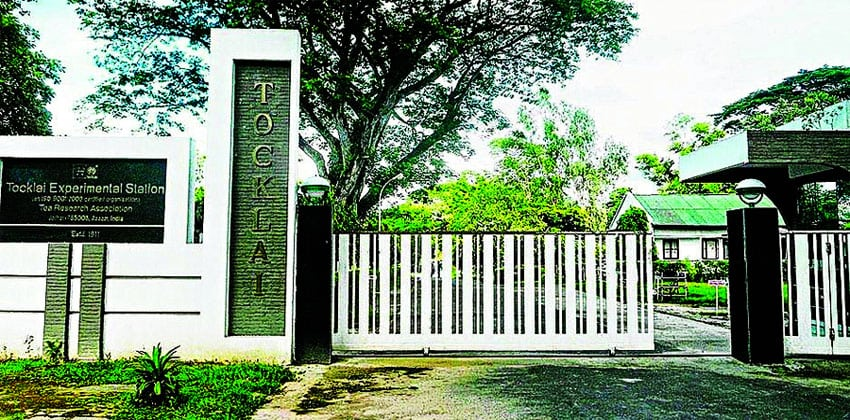
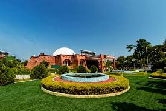

One of the 51 Shakti Peeths in India, the Kamakhya Temple carries a myth to protect devotees from evil eyes. It’s one of the most popular and famous tourist places in Assam for pilgrims and tourists alike owing to its amazing Tantric adoration. Located atop Nilachal Hills, this temple’s main deity is Lord Shiva and Daksha Yagna (Death Incarnation). This temple is certainly one of the most revered temples in Guwahati.

Majuli’s eye-warming naturescapes make it one of the top tourist places in Assam. It is the world’s largest riverine island as well as one of the most important Satras established by Sankardeva and Madhavdev. The Majuli islands are spread over an area of around 452 sq km and most of these get submerged underwater during the monsoons, leaving the bigger islands like Kamalabari, Auniati, and Garamur on the surface. This is why it’s best to visit this place in Guwahati in May. This is undoubtedly among the best places to visit in Assam. Apart from having remarkable natural beauty, Majuli is also a birdwatcher’s paradise. A holiday with Assam tourism is incomplete without seeing one of the most beautiful places to visit in Assam.

Established in 1911, the Tocklai Tea Research Centre is among the largest and oldest tea research stations in the world. All the scientific knowledge that the world holds about tea, has come from this center in Assam. Various researches on the extraction, cultivation, and processing of tea are conducted here day after day in order to enhance tea’s nutritional value. This is one of the most popular Assam tourist places owing to its regular tea processing tours and tasting tours it holds for visitors.

Located in the capital city of Guwahati deep inside the Hengrabari Reserved Forest, the Assam State Zoo is among the most fascinating places to see in Assam. It’s a must visit for all nature lovers and wildlife enthusiasts who wish to spend time amidst the green zones of this state and meet over 900 species of animals, birds, and reptiles. Set up in 1957, the botanical garden cum zoo has expanded over the years and turned into the home of the one-horned Rhinoceros, tigers, clouded leopard, elephants, leopards, and many more species. You’ll also find chimpanzees, white rhinos, kangaroos, giraffes, zebras, puma, ostriches, jaguars, and llama here.

This religious island is among the best places to visit in Assam in June and should be on the bucket list of every traveler visiting Assam. Also called Peacock Island by the British, this small islet owes its fame to its location smack in the middle of river Brahmaputra and the fact that it is easily accessible from Guwahati. This island is among the smallest islands of the world and houses the famous Umananda Temple dedicated to Lord Shiva.

Astronomy lovers who visit Assam absolutely love this one attraction. The Guwahati Planetarium attracts a large number of visitors every year with its myriad avenues for space exploration and activities for kids and space enthusiasts. It’s a great place for young minds that want to learn surprising facts about the universe in a fun and interactive way. This popular astronomical research centre also hosts a number of seminars and exhibitions to let people witness rare phenomenons like solar eclipses and meteor showers.
Akashiganga Waterfalls.
Kakochang Waterfalls.
Chandubi Waterfalls.
Nohkalikai Waterfalls.
Sivakunda Waterfall.
Kaziranga National Park
Manas National Park
Dibru - Saikhowa National Park
Nameri National Park
Orang National Park and Tiger Reserve (ONPTR)
Dehing Patkai National Park
Raimona National Park